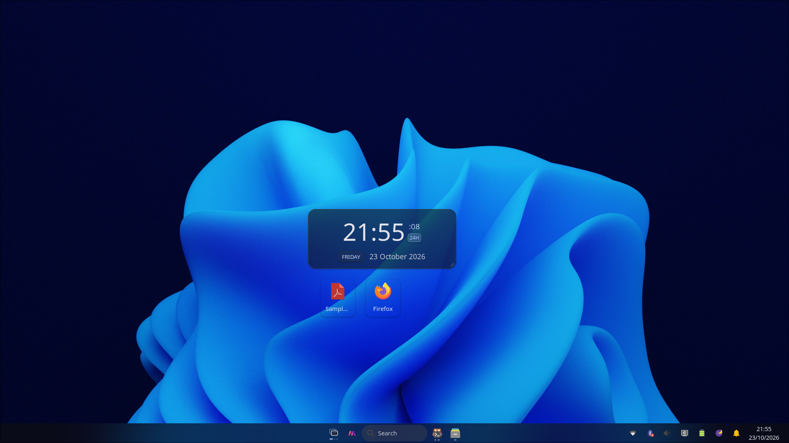
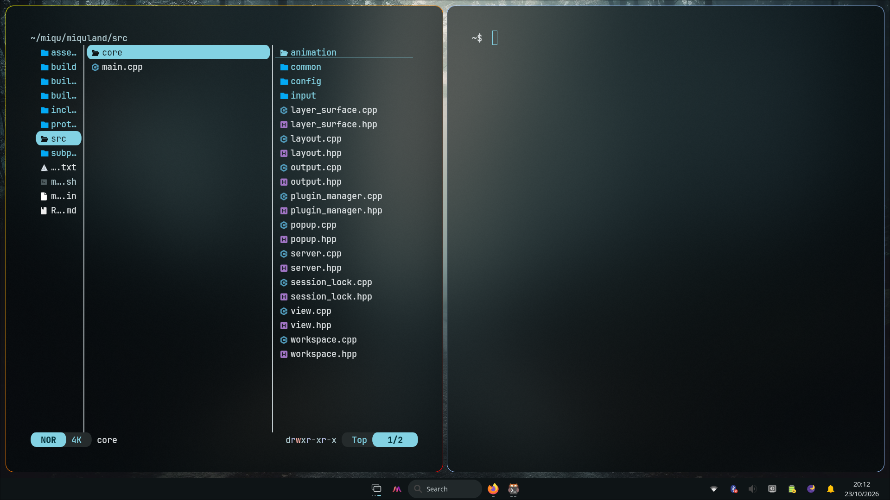
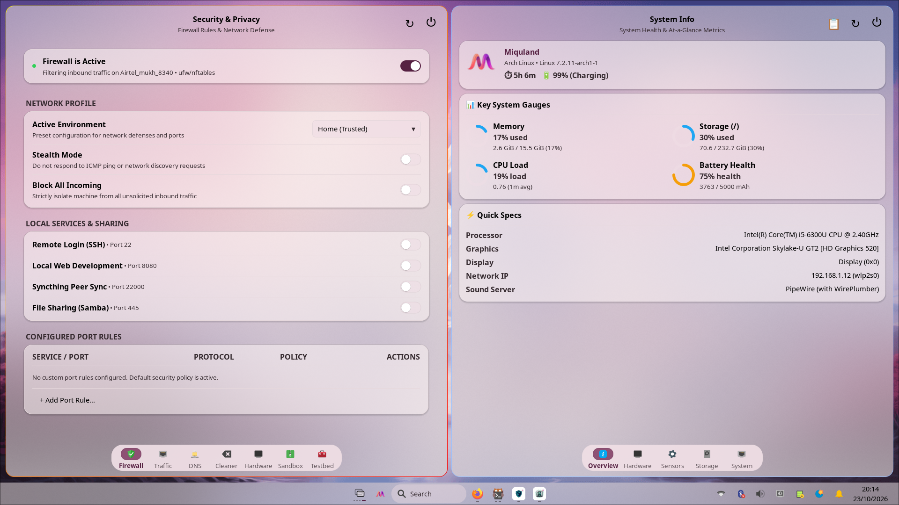
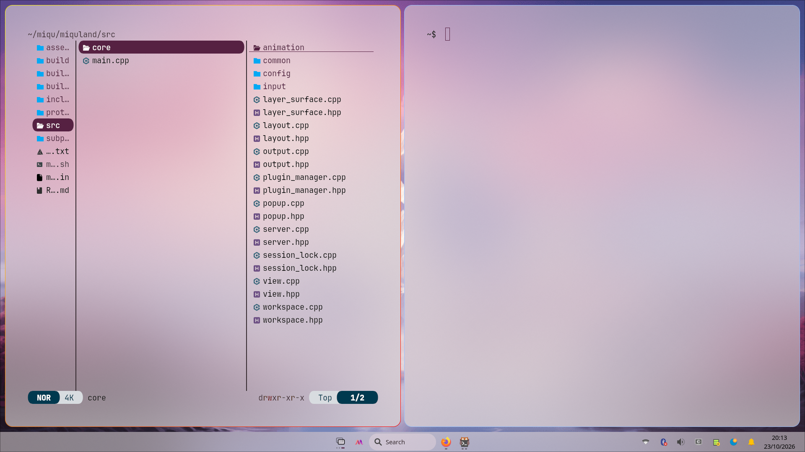
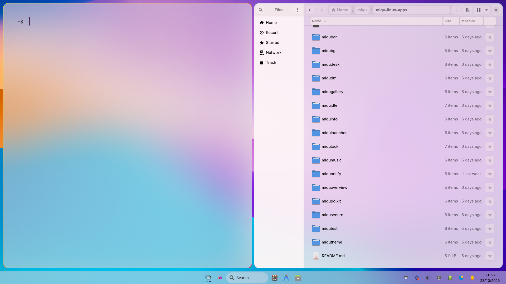

wlroots and scenefx. Alongside the compositor, it provides miqutoolkit, a shared C++20 UI library that can be used on any Wayland compositor to build native apps and tools. All desktop apps and shell components in miqu-project are built with miqutoolkit. miquland and miqutoolkit are completely independent.
Components
| Component | Role | Description |
|---|---|---|
| miquland | Compositor | Dynamic tiling Wayland compositor built on wlroots and scenefx with GPU-accelerated blur, miquctl IPC, and 0.0% idle CPU usage. |
| miqutoolkit | UI Toolkit | Shared C++20 UI framework powered by Cairo, Pango, and OpenGL, providing unified widgets and live dynamic theming across any Wayland compositor. |
| miqubar | Status Bar | Wayland status bar & taskbar featuring workspace indicators, system tray, and interactive flyouts. |
| miqudesk | Desktop Canvas | Interactive desktop canvas bringing classic desktop ergonomics (shortcuts, widgets) to Wayland. |
| miqulauncher | App Launcher | Fast application launcher, fuzzy dmenu alternative, and active window switcher. |
| miqupower | Power Manager | Native power & session management dialog with running application warnings and graceful miquland teardown. |
| miquoverview | Exposé Plugin | GPU-accelerated live workspace exposé and overview plugin. |
| miqunotify | Notification | Native desktop notification daemon and slide-out notification history center. |
| miqudm | Display Manager | Wayland-native Display Manager and login greeter with PAM integration. |
| miqubg | Wallpaper | Independent wallpaper daemon for rendering, multi-monitor scaling, and transitions. |
| miqulock | Screen Lock | Secure session locking utility strictly implementing the ext-session-lock-v1 protocol. |
| miquidle | Idle Daemon | Idle management daemon monitoring activity via ext-idle-notify-v1. |
| miqupolkit | Polkit Agent | Native graphical Polkit authentication agent handling privilege escalation. |
| miqusettings | Settings | Modern Miller-columns centralized desktop settings manager, visual theme & appearance manager, network security, WireGuard VPN, and system configuration manager. |
| miqumusic | Audio Player | Fast, lightweight native MPD client, playlist manager, and audio playback controller. |
| miqufiles | File Manager | Modern Yazi-style Miller columns file manager with live contextual preview and instant navigation. |
| Doctor | Android | Native Android healthcare diagnostic tool and clinical companion application (Kotlin + Jetpack Compose). |
| Recitation | Android | Distraction-free Quran memorization, audio recitation, and study companion mobile application (Kotlin + Jetpack Compose). |
Features
IPC Controls & miquctl
Binary-framed Unix domain socket with plain-text shell fallback, live state queries, 24 window/workspace dispatchers, graceful 3-stage shutdown orchestration, and zero-polling event streaming.
XDG Portals & Screen Sharing
Native Wayland capture protocols (ext-image-copy-capture-v1) paired with xdg-desktop-portal-wlr and xdg-desktop-portal-gtk for smooth OBS, Discord, and WebRTC sharing.
GUI Display Manager (miqudm)
Outside of SDDM and GDM, most Wayland display managers are TUI-based. miqudm delivers a true Wayland-native graphical login greeter powered by miqutoolkit, with user avatars, session selection, power controls, PAM authentication, and logind seat management.
AI, Code & Trust (LLM Use)
An open, unvarnished look at where LLM coding fails, our honest steelman against Miqu, how we diverge from Hyprland, and the strict C++20 RAII & 0.0% idle CPU rules that keep it safe.
miqutoolkit, and miqutoolkit does not require Miquland. If miqutoolkit is installed under any other Wayland compositor (such as Hyprland, Sway, Niri, or River), all 14 Miqu Linux applications will run natively.
Screenshots
Click any image to enlarge




Quick Installation
git clone https://github.com/miqu-project/miqu.git && cd miqu
/usr)
sudo ./install.sh
build/ without installing to /usr)
./install.sh
miquland)
./make.sh miquland
miqufiles)
./make.sh miqufiles
“You stand in the presence of Miquland, of House Wayland, rightful heir to the dynamic tiling window manager, rightful queen of blur and animations, protector of the beauty of Windows, macOS, GNU/Linux, and Arch Linux, the mother of window managers, the Khaleesi of great companion tools and apps, the unbreachable, the breaker of the pain.”